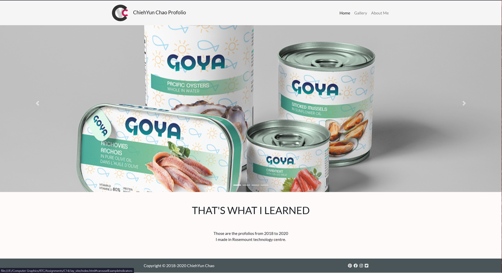
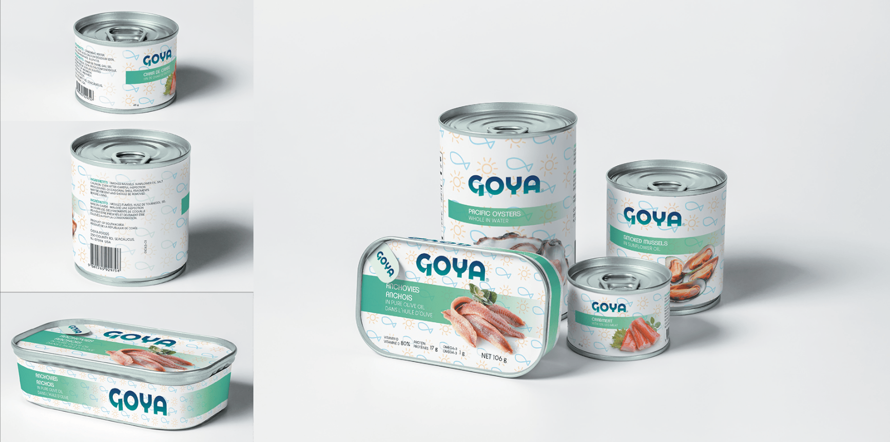
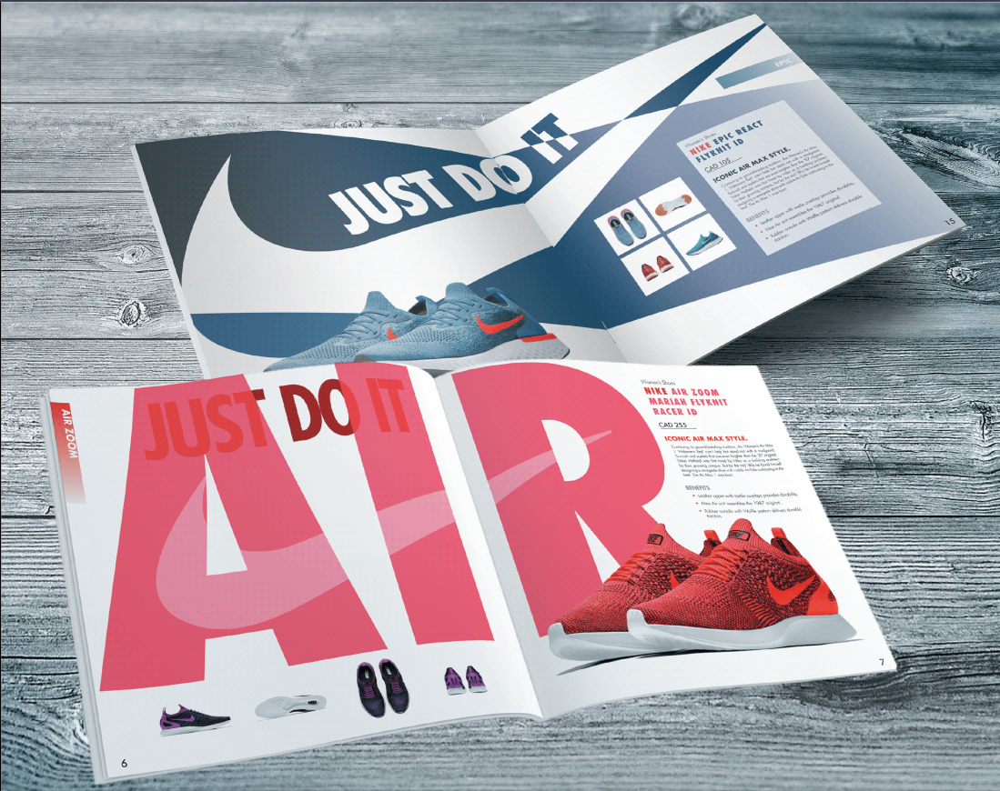
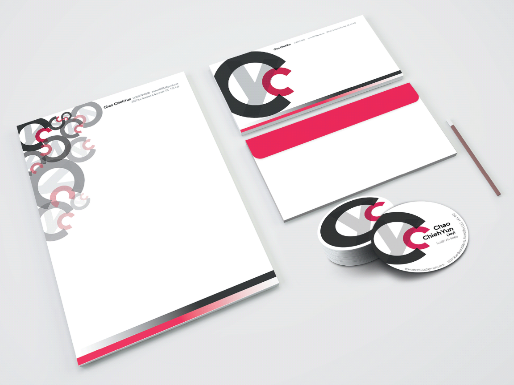
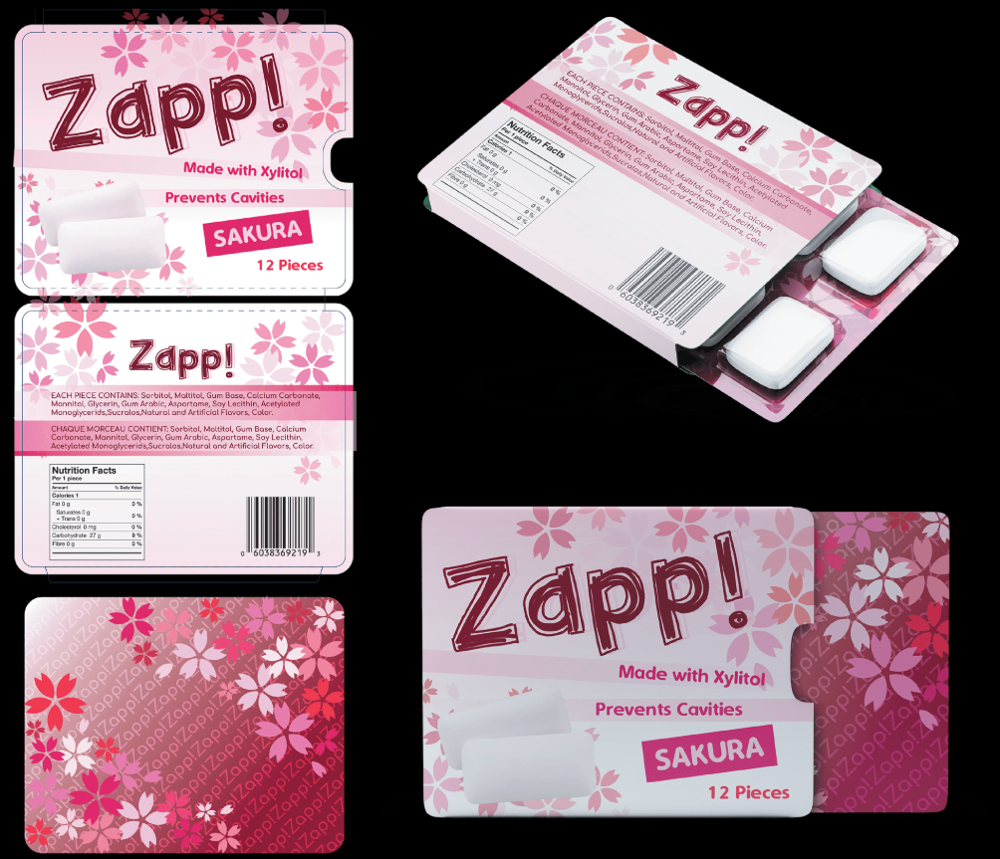

Profolio website
My profolio website, that contains all the graphic design project I've done.
2019.12.08 completed
Made by HTML, css, JavaScript, bootstrap

Can design mockup
The can cover design on the mockup.
2019.10.04 completed
Made by Photoshop, Illustrator, Indesign

Magazine design mockup
Nike Air advertising design on the magazine
2019.10.18 completed
Made by Photoshop, Illustrator, Indesign

Stationary design mockup
Stationary design on the mockup.
2019.12.08 completed
Made by Photoshop, Illustrator, Indesign

Gum package design
Gum package design on the mockup.
2019.11.25 completed
Made by Photoshop, Illustrator, Indesign
NutritionInfo OOP Application
Built an OOP-based Java NutritionInfo application with computeFatPercentage, computeIsHighFiber,
and computeIsSourceCalcium methods, formatted label output, and Unit tests.
2025.06.12 completed
Made by Java Eclipse
Round-Robin Scheduler
Developed a Java round-robin scheduler in Eclipse generates formatted
two-row pairings for eight participants across unique rounds.
2025.05.14 completed
Made by Java Eclipse
Responsive website
Built a responsive, semantic HTML5 webpage using external CSS and Flexbox
to demonstrate modern layout, accessiblity, and styling techniques.
2025.06.30 completed
Made by HTML, CSS
Personal Portfolio website
Developed a responsive personal website using HTML, CSS and JavaScript, featuring a self-introduction,
resume, project portfolio, and contact information.
2025.07.06 completed
Made by HTML, CSS, JavaScript